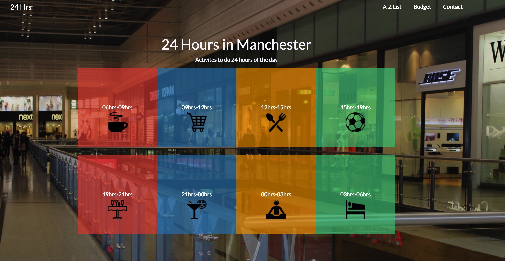

Patrick's Work
Here are some examples of projects I've been involed in. They are either university related or personal.

DPM Project
The task was to create a practical website for students which provided useful information. This included: places to shop, places to eat and places to visit within Manchester.
My role within this project was lead web developer. I had the fortunate task of creating the website based on research from other group members.
DPM Project
The task was to create a practical website for students which provided useful information. This included: places to shop, places to eat and places to visit within Manchester.
My role within this project was lead web developer. I had the fortunate task of creating the website based on research from other group members.